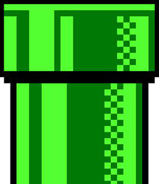
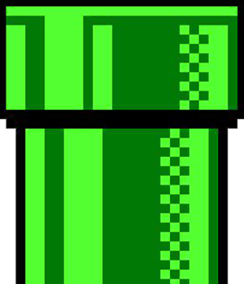
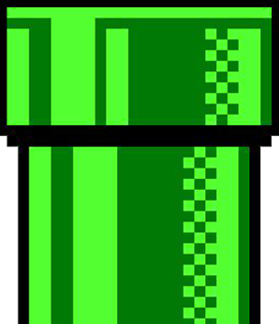

Este jogo não é adequado para dispositivos com resolução menor que "768px". Portanto, a experiência não será a mesma.
Score: 0
Pressione uma tecla para recomeçar
 

Este jogo não é adequado para dispositivos com resolução menor que "768px". Portanto, a experiência não será a mesma.
